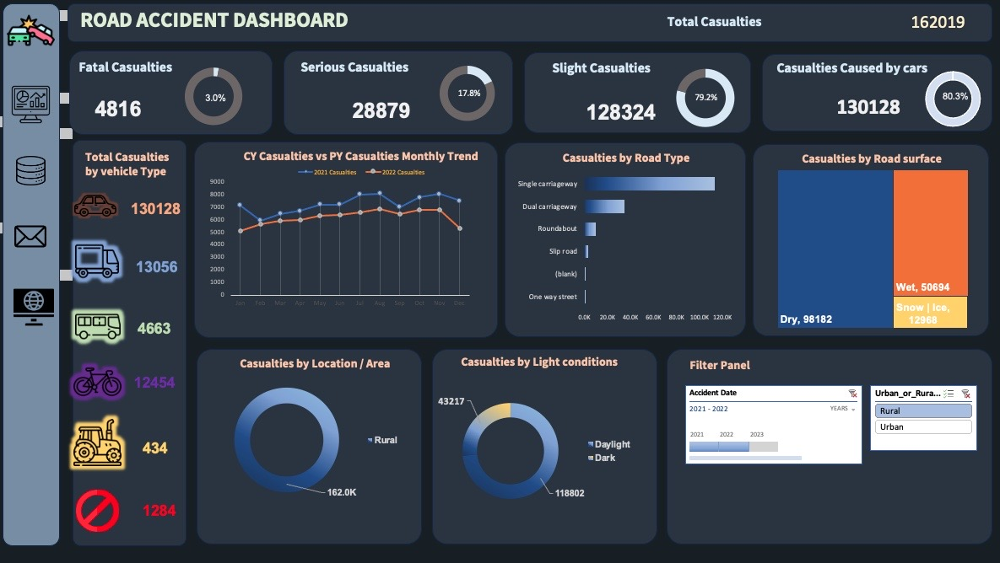
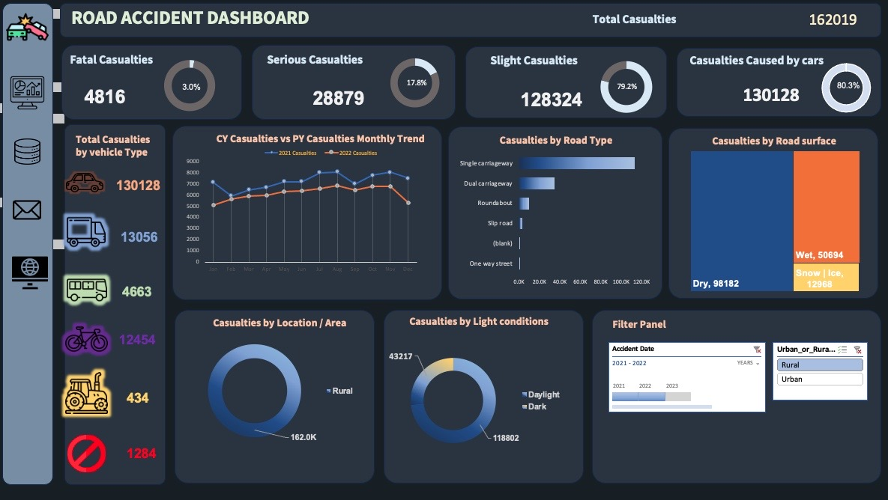
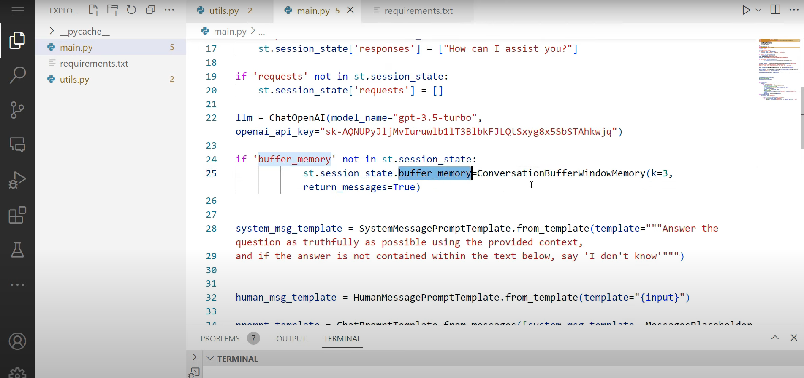

Experienced and results-driven data analyst with a proven track record in statistical validation, SQL,
and data visualization. Skilled in optimizing data collection processes, driving strategic decision-making, and leading teams to success.
Strong educational background in Artificial Intelligence at the birmingham city university(Masters), computer sciences at caleb university (Bachelors), complemented by certifications in data analytics offered by Google and Python development. Passionate about synthesizing research and data insights into impactful presentations. A fast learner who remains up-to-date with industry trends and technologies,
ready to make a significant impact in data-driven environments.
 

This data analysis project provides valuable insights for understanding road accidents in the UK and lays the foundation for evidence-based strategies to reduce accidents and promote road safety.
As a data analyst, I am committed to further exploring the dataset and developing actionable solutions for safer roads in the future.

In this project, I utilized the Langchain technology, released in October 2022, to develop a data-based chatbot. By integrating Langchain with other powerful technologies such as Open AI's ChatGPT, Pinecone, and Streamlit Chat, I led the development of an intelligent and highly efficient chatbot solution. Leveraging the chatbot's ability to refine queries and utilize its own document index, we achieved a remarkable 70% improvement in response accuracy. Users were provided with comprehensive answers to complex questions, enhancing their overall experience with the chatbot.

In this human resources project, data-driven analysis using SQL and Python resulted in a remarkable 53.7% consumer sales growth.
The project involved loading and visualizing data with Python to identify key business insights that could enhance sales performance.
Data transformation and filtering techniques were employed to improve the reporting process,
while specific questions raised by stakeholders were addressed and answered through data analysis.
This project demonstrates the effectiveness of leveraging data analytics to drive significant sales growth, improve business intelligence, and provide valuable insights to support decision-making in the human resources domain.

This project demonstrates the application of machine learning in the field of healthcare, specifically in predicting heart disease.
By utilizing data science techniques and advanced algorithms, we aimed to provide accurate predictions and contribute to early detection and prevention of cardiovascular conditions.
The focus on data quality, feature engineering,
and optimization showcases the commitment to creating reliable and accurate predictive models for improved healthcare outcomes.
{kind=link}